Universidad Mayor
para espíritus emprendedores
Escuela de Ingeniería en Computación e Informática
Facultad de Ciencias, Ingeniería y Tecnología
2026
Solución tecnológica para el registro, cruce de datos y análisis del entrenamiento concurrente
La solución: qué hace, cómo lo hace y por qué vale la pena.
Nombre: Diego Vilches
Profesor: Armando Patricio Muñoz
Fecha: 11/2026
Correo: diego.vilches@mayor.cl
Índice de la presentación
Haz clic en un tema para ir directo a esa lámina.
1 · El problema
2 · La solución
4 · Arquitectura
5 · Negocio
Casi todos quieren empezar a moverse
Los motivos cambian. Las ganas son las mismas.
Por salud
Sentirse mejor, dormir mejor y prevenir enfermedades.
Por cómo se ve
Bajar de peso, ganar músculo o simplemente verse mejor.
Por dejar el sillón
Cambiar una vida sedentaria y tener más energía en el día.
1 de cada 3
adultos en Chile hace actividad física de forma regular (MINDEP).
Querer empezar es fácil. Lo difícil es saber cómo, y no rendirse en el camino.
Información sobra. Lo que falta es una guía para ti.
Está repartida
Rutinas en YouTube, recetas en Instagram, rutas en otra app. Nada está en un solo lugar.
Es para todos, no para ti
Está hecha para llegar a millones, no para tu nivel, tus días libres ni tu equipo.
1 de 9
No siempre es confiable
Solo 1 de 9 blogs de influencers populares alcanzó el puntaje mínimo de credibilidad (Sabbagh et al., 2020).
Hay que copiarla a mano
Lo que encuentras lo tienes que anotar en un cuaderno o en otra app para poder seguirlo.
La guía de un programa y la confianza en uno mismo ayudan a mantener el entrenamiento de fuerza (Rhodes et al., 2017).
Y en el camino, casi todos tropiezan
Cuatro errores muy comunes cuando alguien empieza a combinar pesas, cardio y alimentación.
Fatiga cruzada
Piernas pesadas el lunes y una salida larga en bici el martes. Una disciplina le quita a la otra.
Lesiones en el gimnasio
Subir el peso o el volumen más rápido de lo que el cuerpo está acostumbrado se asocia a más lesiones (Gabbett, 2016).
Comer mal para lo que entrena
El mismo plato un día de descanso que después de tres horas en bicicleta. El cuerpo no se recupera.
Sobreentrenamiento
Entrenar más no siempre es mejor. El rendimiento baja, el progreso se estanca y aparece el cansancio.
El resultado: frustración, dolor y abandono.
Ninguno se ve en una sola app, porque cada una mira solo una parte del entrenamiento.
Pensada para el que empieza. Útil para el que ya entrena.
El que empieza
- Un plan semanal según su nivel, sus días y su equipo.
- Rutinas y recetas de personas que elige seguir.
- Un aviso antes de que la fatiga se acumule.
- Le basta con el celular.
El atleta híbrido
- Sus datos del reloj y del ciclocomputador, sin pasarlos a mano.
- Fuerza, cardio y comidas cruzados en una sola app.
- Metas de comida que cambian según la sesión del día.
- Comparte sus rutinas, rutas y recetas.
Funciona con lo que tengas. Mientras más datos, más precisas las sugerencias.
Solo el celular
GPS y cómo sentiste el esfuerzo
Con reloj
Health Connect o Apple Health
Con ciclocomputador
Archivo .fit con potencia y cadencia
Cada tropiezo tiene una respuesta
Una app que registra, cruza tus datos y te sugiere cómo seguir. Tú decides.
| Tropiezo | Lo que hace la app |
|---|---|
| No sé por dónde empezar | Te sugiere un plan semanal según tu perfil |
| Pesas, cardio y comida en tres apps | Registra todo en un mismo lugar, en pocos pasos |
| Subir la carga demasiado rápido | Mide la carga de fuerza y de cardio con la misma regla |
| Fatiga cruzada y sobreentrenamiento | Cruza tus datos y te avisa antes, con una sugerencia |
| Comer mal para lo que entreno | Ajusta tus metas de comida al entrenamiento del día |
| Información genérica y copiada a mano | Una red social donde agregas lo que te sirve con un botón |
Cinco procesos que entregan valor al atleta
Dibujados con carriles, al estilo BPMN: cada carril es un participante y cada rombo, una decisión. Haz clic en uno para verlo en grande.
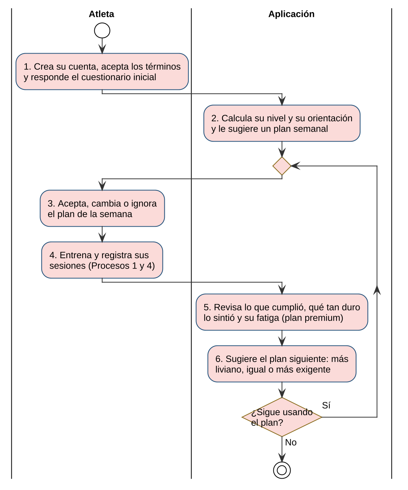
En detalleProceso 5
Perfil y plan sugerido
Atleta y app · R13
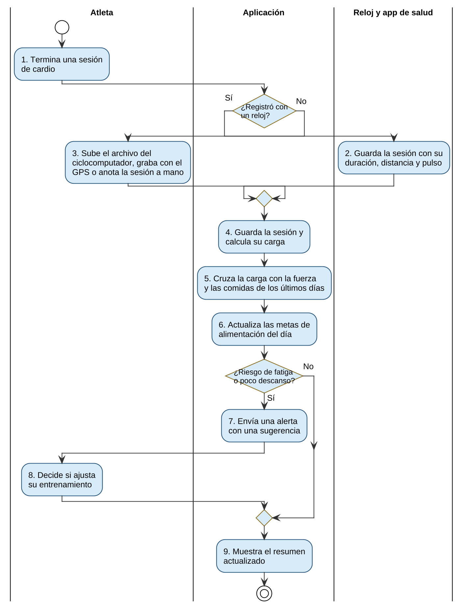
En detalleProceso 1
Cardio y fatiga cruzada
Atleta, app y reloj · R02 y R03
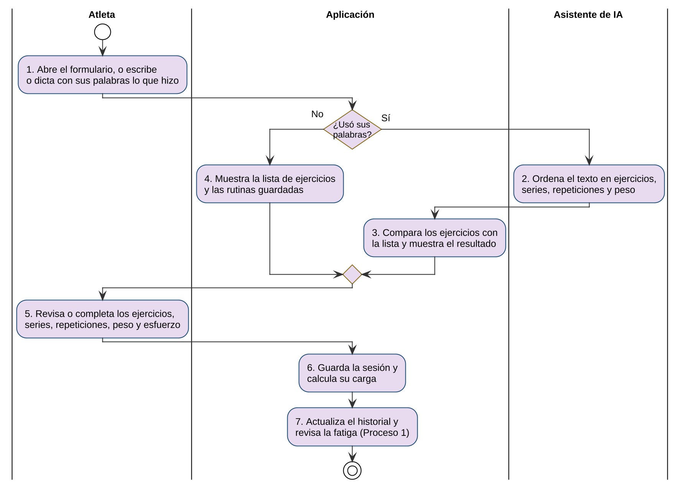
Proceso 4
Registro de fuerza
Atleta, app e IA · R01
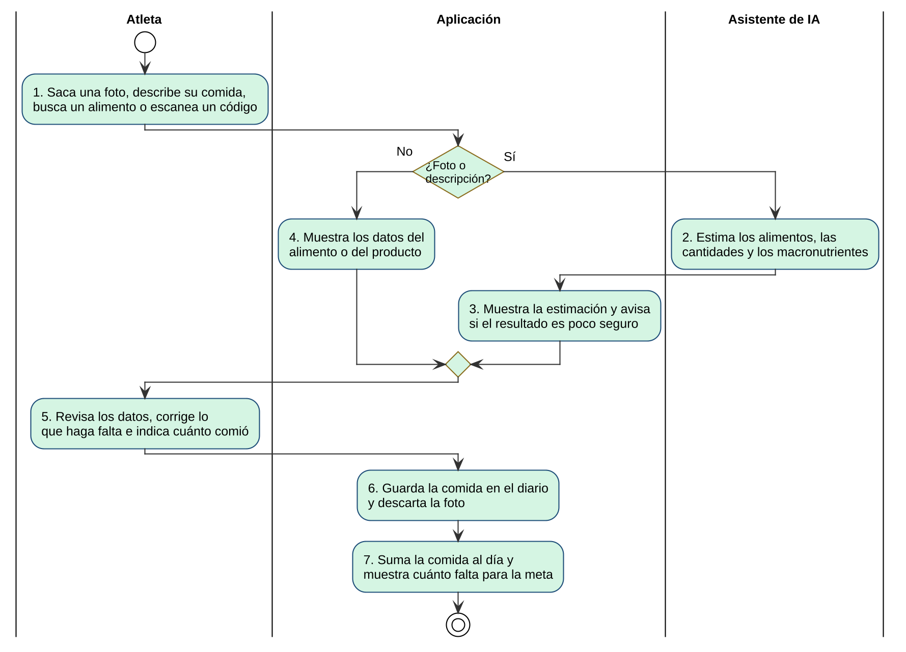
Proceso 2
Comidas y metas
Atleta, app e IA · R04 y R05
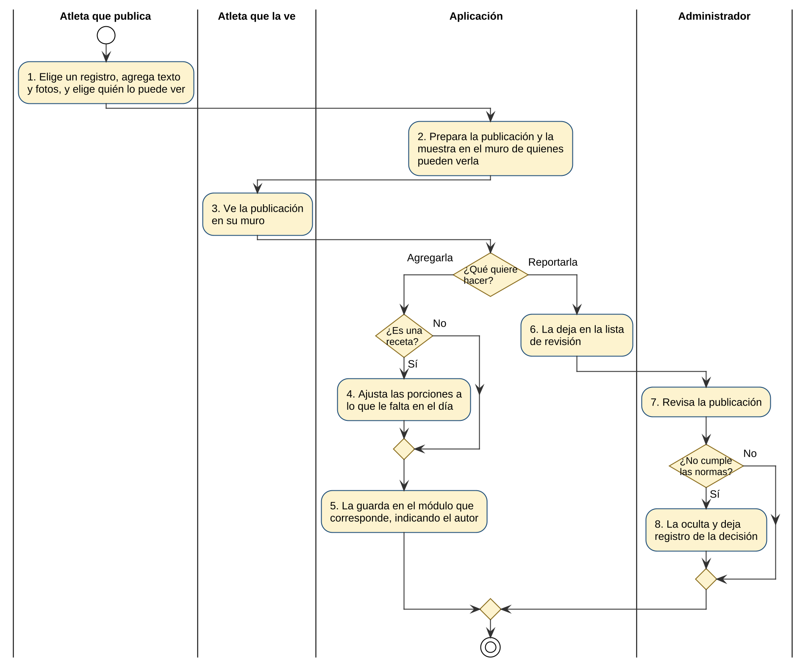
Proceso 3
Comunidad
Atletas, app y administrador · R08, R11 y R12
El camino del que empieza: un plan que aprende contigo
Responde el cuestionario y la app calcula su nivel, su orientación y un plan semanal.
El atleta acepta, cambia o ignora el plan. La decisión siempre es suya.
Entrena y registra sus sesiones, con los procesos 1 y 4.
La app revisa lo cumplido y qué tan duro lo sintió, y propone un plan más liviano, igual o más exigente.
El ciclo se repite cada semana. En premium también considera la fatiga cruzada.
Venga de donde venga, la sesión se cruza
Registrar
Tareas 1 a 3. Llega desde el reloj, un archivo .fit, el GPS o a mano.
Cruzar
Tareas 4 a 6. Calcula la carga, la junta con la fuerza y las comidas y ajusta las metas del día.
Sugerir
Tareas 7 a 9. Si hay riesgo, avisa con una sugerencia y muestra el resumen.
Las dos decisiones del proceso
1¿Registró con un reloj? Si es así, la sesión llega sola. Si no, la sube, la graba o la anota.
2¿Riesgo de fatiga o poco descanso? Solo entonces envía una alerta.
Tarea 8: el atleta decide si ajusta su entrenamiento. La app no cambia nada por su cuenta.
27 casos de uso
Perfil y cuenta
12Completar mi perfil y recibir un plan
21Controlar mis datos personales
24Contratar el plan premium
25Cancelar mi suscripción
26Aceptar los términos de uso
Fuerza
01Anotar una sesión de fuerza
02Contar mi sesión con mis palabras
Cardio
17Registrar una sesión sin reloj
03Traer mis sesiones desde el reloj
04Subir el archivo de mi ciclocomputador
Fatiga y progreso
05Revisar mi fatiga y recibir alertas
19Revisar mi progreso
20Anotar cómo me sentí
Nutrición
15Registrar un producto con su código de barras
18Ver mis metas de alimentación del día
06Anotar una comida buscando los alimentos
07Registrar una comida con una foto
16Contar mi comida con mis palabras
08Agregar una receta ajustada a mis metas
27Crear una receta
Comunidad
23Ver el muro de la comunidad
13Agregar una publicación a mis módulos
09Publicar una sesión, ruta o comida
14Seguir a otro usuario
22Reportar una publicación
Administración
10Mantener el catálogo de ejercicios
11Revisar el contenido reportado
Se usan desde un panel web.
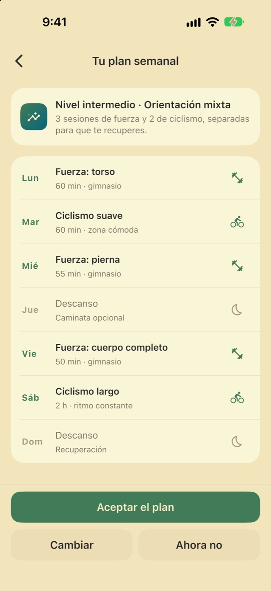
Responde tres pasos y recibe tu plan
- 1Respondes un cuestionario corto: experiencia y objetivo, días y equipo, y tus datos personales.
- 2La app define tu nivel (principiante, intermedio o avanzado) y tu orientación (fuerza, resistencia o mixta).
- 3Recibes un plan semanal, con las sesiones separadas para que te recuperes.
- 4Cada semana se ajusta según lo que cumpliste y qué tan duro lo sentiste.
Tropiezo que evita
«No sé por dónde empezar ni cómo combinar pesas y cardio.»
Tú decides
Puedes aceptar el plan, cambiarlo o dejarlo para después.
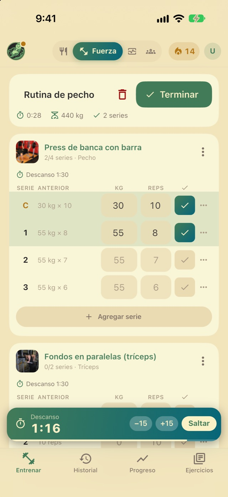
Anota tu sesión de gimnasio mientras entrenas
- 1Empiezas una rutina guardada o una sesión libre.
- 2Anotas el peso y las repeticiones de cada serie.
- 3Al terminar indicas qué tan duro lo sentiste, de 1 a 10 (RPE).
- 4La app calcula la carga de la sesión y la suma a tu historial.
Carga
minutos × RPE
La misma regla para fuerza y para cardio (Foster et al., 2001).
Tropiezo que evita
Subir el peso semana a semana sin saber cuánto vienes entrenando.
En premium (CU-02)
Cuentas tu sesión con tus palabras y la IA la ordena en series.
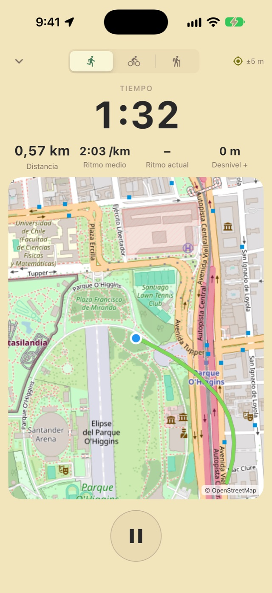
Sal a correr o a pedalear solo con tu celular
- 1Eliges la disciplina: ciclismo, running o trekking.
- 2Grabas con un toque y ves el tiempo, la distancia y el mapa.
- 3Al terminar indicas qué tan dura la sentiste.
- 4La carga queda en la misma unidad que tu sesión de fuerza.
Con reloj (CU-03). La sesión llega sola desde la app de salud del teléfono.
Con ciclocomputador (CU-04). Subes el .fit y ves potencia y cadencia.
Tropiezo que evita
Pesas y cardio se miden distinto, así que nadie suma el cansancio de los dos.
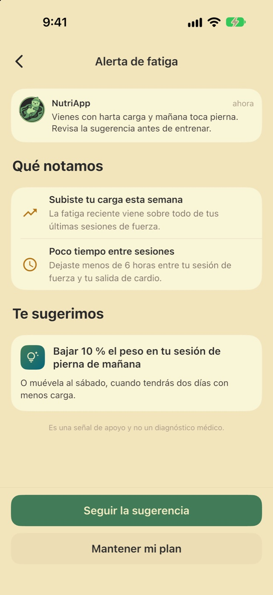
Te avisa antes de que la fatiga te frene
- 1Cada sesión que registras se cruza con las demás y con tus comidas.
- 2Compara tu carga de la última semana con la de las últimas seis.
- 3Si detecta un riesgo, te envía un aviso con una sugerencia concreta.
- 4Tú eliges: seguir la sugerencia o mantener tu plan.
Cuándo avisa
Tu carga semanal supera 1,3 veces lo habitual y mañana toca una sesión exigente de la otra disciplina.
Dejaste menos de 6 horas entre una sesión de fuerza y una de cardio.
Tropiezos que evita
Fatiga cruzada, sobreentrenamiento y lesiones por subir la carga muy rápido.
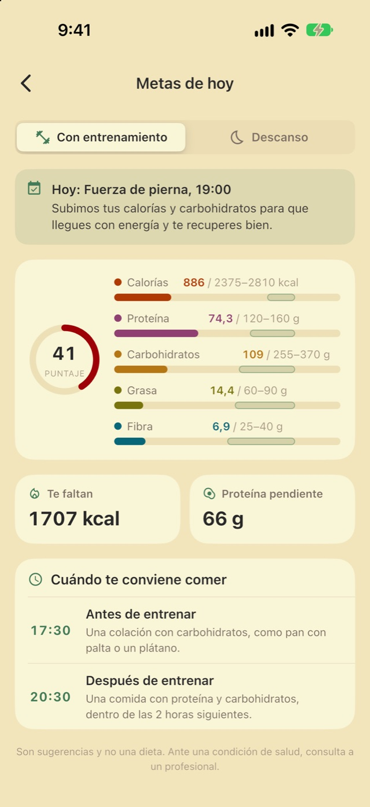
Come según lo que entrenas hoy
- 1Escaneas el código de barras del producto y ajustas la porción.
- 2La comida se suma a tu diario, con sus calorías y macronutrientes.
- 3Tus metas cambian según el día: más carbohidratos antes de pierna, otras metas en descanso.
- 4Te sugiere qué comer antes y después de entrenar.
Código de barras
Buscar en la lista
Foto del plato (IA)
Con tus palabras (IA)
Tropiezo que evita
Comer lo mismo entrene o no, y no recuperarse.
Metas, no dietas
Son sugerencias. La app no reemplaza a un nutricionista.
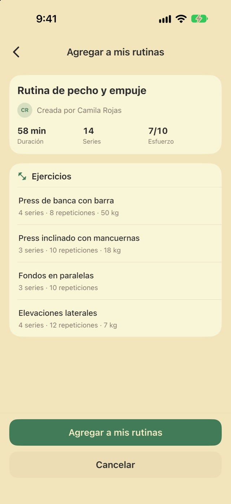
Una red social que sí puedes usar
- 1En tu muro ves lo que publican las personas que sigues.
- 2Abres una rutina, una ruta o una receta y ves quién la creó.
- 3Pulsas «Agregar a mis rutinas».
- 4Queda una copia en tu módulo, lista para usar y conectada al cruce de datos.
Con recetas: las porciones se ajustan a lo que te falta comer ese día.
Al publicar una ruta: se ocultan el inicio y el final, para no mostrar dónde vives.
Tropiezo que evita
Información genérica de redes sociales que hay que copiar a mano.
Otras pantallas del prototipo
Hechas en Flutter, no en una herramienta de dibujo. Todas están en el capítulo 7.
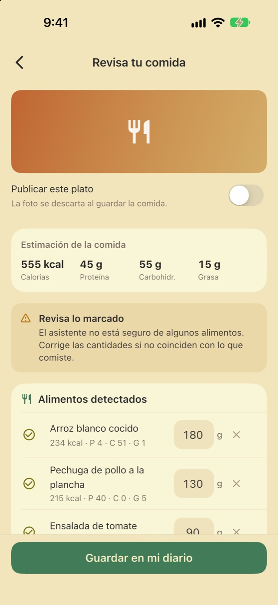
Comida con una foto
CU-07 · IA
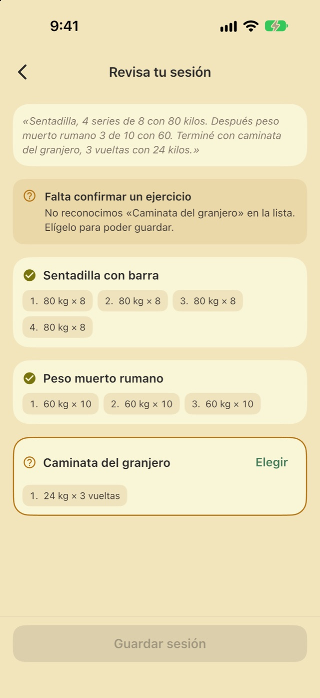
Fuerza con tus palabras
CU-02 · IA
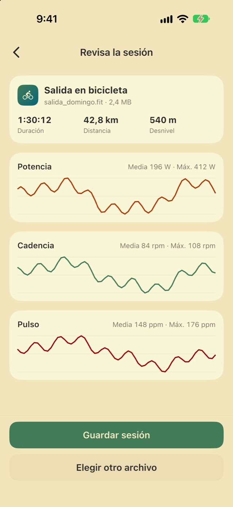
Archivo .fit
CU-04 · Ciclocomputador
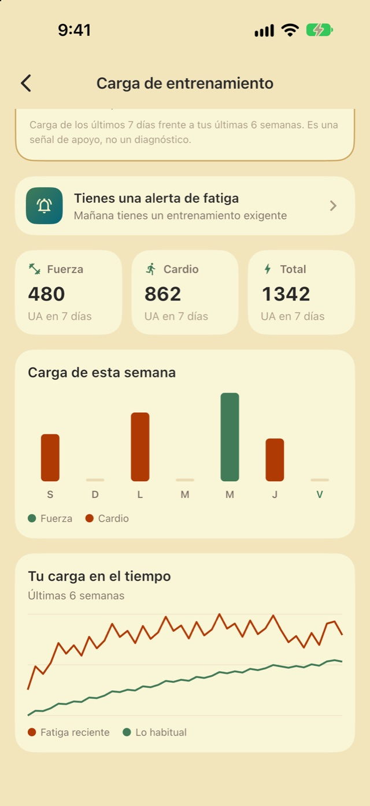
Tu carga en el tiempo
CU-19 · Progreso
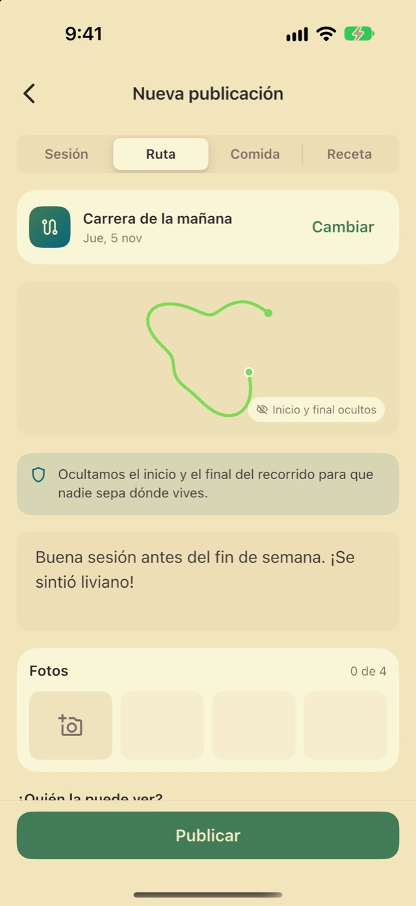
Publicar una ruta
CU-09 · Comunidad
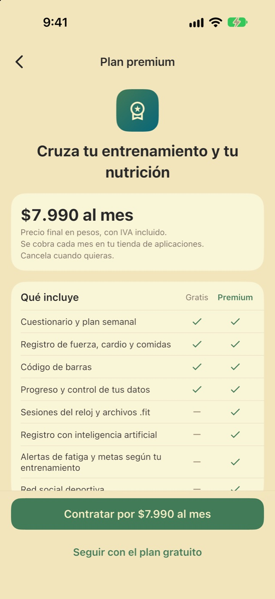
Plan premium
CU-24 · Precio con IVA
Cliente y servidor, en tres capas
Capa 1
Presentación
App móvil · Flutter
Android e iOS con un solo código
Health Connect / Apple Health
Datos del reloj, con permiso
Panel web
Para el administrador
Capa 2
Procesamiento en la nube
API · NestJS
Calcula la fatiga, las metas de comida y el plan sugerido
Lector .fit
AWS Lambda
MongoDB Atlas
Historial como documentos
Capa 3
Servicios externos
Gemini
Fotos y textos
Open Food Facts
Códigos de barras
Firebase
Alertas al teléfono
S3 y CloudFront
Fotos y archivos
Play y App Store
Pagos
Por qué estas piezas
Flutter
Un solo código para Android e iOS, con la misma experiencia. Tiene paquetes para leer Health Connect y Apple Health, y el prototipo ya está hecho con él.
NestJS
TypeScript ordenado en módulos: fuerza, cardio, nutrición y comunidad. Revisa cada dato antes de guardarlo y es la única pieza que guarda las claves.
MongoDB Atlas
Una sesión puede tener 3 ejercicios y otra 7. Cada una se guarda como un documento, sin cambiar la estructura. Los puntos GPS van en series temporales.
AWS Fargate y Lambda
La API corre en contenedores sin administrar servidores, de 1 a 3 según el uso. El lector .fit solo se enciende cuando llega un archivo.
Gemini Flash
Entiende fotos de comida y textos libres. Se llama solo desde la API, para proteger la clave y controlar el gasto. Cambiar de proveedor solo toca esa conexión.
S3 y CloudFront
Las fotos se suben directo desde el teléfono con un permiso temporal y no pasan por la API. CloudFront las muestra dentro de su nivel gratuito.
Todas son tecnologías abiertas o servicios probados. No hay que crear hardware ni inventar algoritmos desde cero.
Dimensionada para 1.500 usuarios
↓ HTTPS
AWS · región São Paulo
↓
API NestJS en Fargate
0,5 vCPU y 1 GB · de 1 a 3 tareas · dos zonas
Lector .fit
Lambda, solo al llegar un archivo
S3 y CloudFront
Buckets privados · subida prefirmada
ECR, Secrets y CloudWatch
Imágenes, claves y registros
↓ conexión privada (VPC peering)
Activos al día
600
40% de los registrados
Llamadas a la API
24.000
al día · hasta 10 por segundo
Base de datos
19,9 GB
al cuarto año
Producción
USD 188
al mes, con precios reales
Tres ambientes
Desarrollo
Docker en el computador, sin costo de nube
QA
Se enciende solo para las pruebas, con Atlas gratuito
Producción
Agrega tareas si la CPU pasa del 60%
La carga esperada es un supuesto que se medirá con el prototipo evolutivo.
Un mercado que ya está creciendo
4,5 a 5 millones
de chilenos mayores de 18 años hacen actividad física
1,2 a 1,5 millones
practican pesas, running o ciclismo
180 a 250 mil
hacen entrenamiento concurrente y usan smartphone
1.500 usuarios
escenario conservador, menos del 1%
Hyrox
650 → 650.000
competidores entre 2017 y 2024 en la carrera que mezcla fuerza y resistencia.
Y hay espacio para crecer: 2 de cada 3 adultos todavía no hace actividad física regular.
Gratis para empezar. Premium para ir más lejos.
Gratis
$0
- Cuestionario y plan semanal
- Registro de fuerza, cardio con GPS y comidas
- Código de barras y recetas propias
- Progreso y control de tus datos
Pensado para el que empieza.
Premium
$7.990 / mes
- Todo lo gratuito
- Reloj y archivos .fit
- Registro con IA: fotos y palabras
- Cruce de datos, alertas y metas
- Red social deportiva
De cada $7.990, ¿cuánto llega al proyecto?
Ingreso neto por suscriptor
$68.486 al año
Precio comparado con Fitia ($6.990), Strava ($7.600) y Freeletics ($8.000).
Se sostiene con 159 suscriptores
Flujo de caja a 4 años de la Solución por Capas, con VAN igual a cero y TIR del 15%.
Inversión inicial
$16,2 M
desarrollo y publicación en las tiendas
Costo operativo
$4,5 M al año
nube, IA, fotos, mantención y Apple
Punto de equilibrio
159
suscriptores premium al año
Rentabilidad (TIR)
15%
en 4 años
Recuperación
2,85 años
flujo neto de $5,7 M al año
Conversión necesaria
Ya descuenta el IVA, la comisión de las tiendas y el impuesto a la renta (27%). No incluye el costo de marketing.
Escuela de Ingeniería en Computación e Informática
Facultad de Ciencias, Ingeniería y Tecnología
2026
Empezar bien, y no rendirse en el camino.
Tú decides. ¿Preguntas?
Objetivo: centralizar, cruzar y sugerir para entrenar con información objetiva